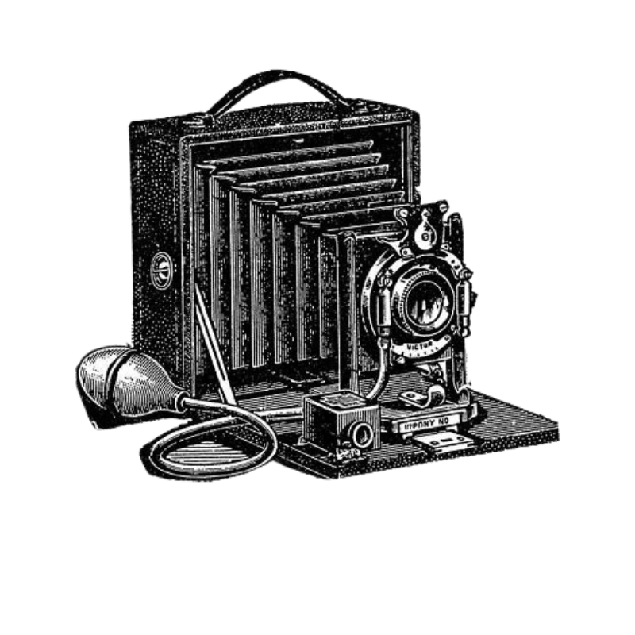

Bonjour ! Je m'appelle Charlotte
J'ai obtenu mon BAC S en 2019, puis je me suis orientée vers le multimédia avec un DUT MMI En parallèle, ma passion pour l’aéronautique m’a poussée à passer le Brevet d’Initiation Aéronautique, puis à entamer une licence de pilote privé. En 2022, j’ai effectué un stage en communication au sein de l’Armée de l’Air et de l’Espace, où j’ai pu mettre en pratique mes compétences en création graphique, photographie et développement web. Cette première expérience m’a donné envie de m’engager, ce que j’ai fait en intégrant l’École de l’Air et de l’Espace en 2023 pour suivre la formation militaire initiale d’officier. J’ai ensuite occupé un poste en tant qu'officier planification et conduite des opérations aériennes sur A400M, où j’étais en charge de la préparation des missions et du soutien aux équipages. Depuis mars 2025, je suis agent d’escale à l’aéroport de Tours Val de Loire. En septembre 2025, j'ai débuté une licence professionnelle techniques du son et de l'image à l'université Rennes 2.
Prises de vue aériennes
Design Graphique

Photographie
Aviation
Ce site est entièrment codé à la main en html, css et javascript. Vous trouverez l'intégralité du code ici. Les éléments graphiques du site (icônes, illustrations) sont issues de la banque d'images de Canva.
Photographies réalisées avec un canon EOS 600D. Retouches réalisées à l'aide de Lightroom.
Les produits graphiques du portfolio pdf sont des productions originales réalisées avec Illustrator et Canva
Prises de vues aériennes réalisées avec un drone dji air3. Montage réalisé grâce à Lightcut. Musiques libres de droits ou incorporées depuis instagram